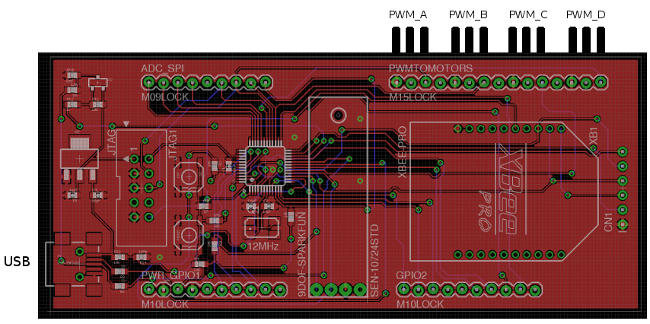

AVTv4
An extensible quadcopter platform by the Portland State Autonomous Vehicles Team

Building and Flashing the Control Board
Wire the control board according to the following diagram and place it on the second plate of the quadcopter. Take the xbee antenna and screw it into the underside of the top plate. Screw in the antenna on the top plate.
Code Red IDE and Libraries
In order to cross compile for and flash the LLFC you need the Code Red IDE. The Code Red IDE is free but requires an account and product activation on their website. Follow the instructions on their website to install the IDE and then activate it. (If you do not activate the IDE you cannot flash the board). http://lpcxpresso.code-red-tech.com/LPCXpresso.
If you have a 64-bit computer, make sure you have 32-bit compatibility libraries installed or the Code Red IDE installer will not execute correctly.sudo apt-get install ia32-libs
Flash the Control Board
Flash the board by attaching it via USB to your laptop and navigate to your QuadLLFC directory.
cd QuadLLFC/
The LLFC code contains an automake based build system. The build system requires that the cross compilation binary be in your path (arm-none-eabi-gcc, etc). Navigate to your /usr/local/ directory and find out which version of LPCXpresso you have (and therefore where you installed it). Add the cross compilation tool to your path with the correct location. This is an example:
export PATH=$PATH:/usr/local/lpcxpresso_4.2.2_238/lpcxpresso/bin/:/usr/local/lpcxpresso_4.2.2_238/lpcxpresso/tools/bin/
After executing this command you can build by issuing make.
make
To flash you must first boot the target board. You only have to do this once whenever you attach the board via USB. Booting the board can be done with the following command.
make boot
Note: the following error is fine!
error.
Continue on to flashing the board.
make flash
Debug Mode
If you are using LPC1343 you can use GDB to debug the software on the target board by using the following command.
make boot
make debug